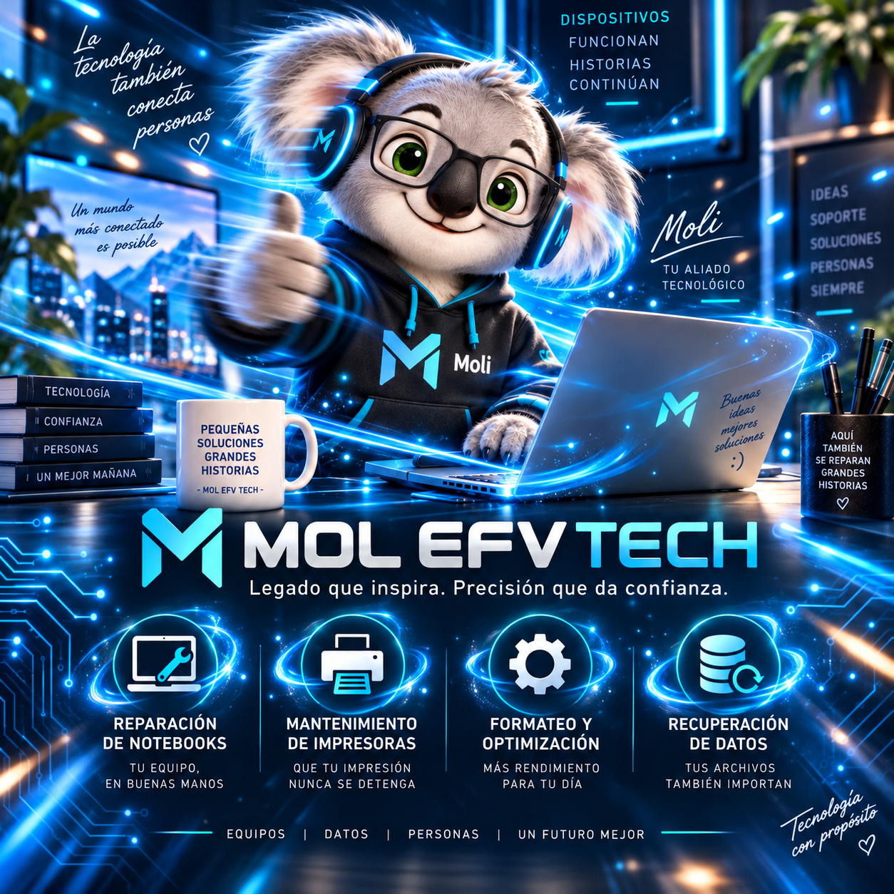
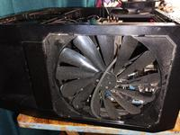
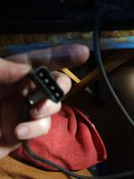
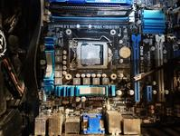
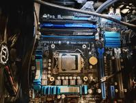
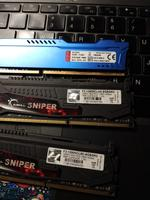
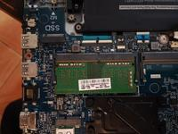

Mantención y limpieza
Limpieza interna, revisión de ventilación y temperatura de notebooks y PC.
Legado que inspira.
Precisión que da confianza.
Mantenimiento, reparación y optimización de notebooks, computadores e impresoras, con atención clara, honesta y personalizada.

01 / QUÉ HACEMOS
Soluciones prácticas para prolongar la vida útil de tus equipos.
Limpieza interna, revisión de ventilación y temperatura de notebooks y PC.
Revisión de rendimiento, instalación de SSD y ampliación de memoria RAM.
Instalación y configuración de Windows y Linux según compatibilidad.
Protección de archivos y evaluación de recuperación de información.
Diagnóstico, mantenimiento y soluciones para fallas de impresión.
Evaluación inicial de hardware, software y conexiones.
02 / NUESTRO ENFOQUE
Fotografías de nuestros procesos de diagnóstico, limpieza y mantenimiento técnico.






Estas fotografías corresponden a componentes y equipos revisados en el taller MOL EFV TECH. Cada servicio se define según la evaluación del equipo.
03 / NUESTRA MASCOTA
La koala tecnológica que acompaña a MOL EFV TECH. Conservamos aquí su video original para que puedas verlo siempre que quieras.
El video se reproduce sin sonido de forma automática cuando el navegador lo permite. La música de la página se controla por separado.
Conversemos sobre tu equipo ↗04 / EVALUACIÓN PRELIMINAR
Completa una ficha sencilla. Recibirás una orientación inicial y podrás compartir la información por WhatsApp para coordinar una evaluación técnica.
Valor del diagnóstico inicial. Reparaciones y repuestos se cotizan aparte.
05 / CONTÁCTANOS
Escanea un QR o abre el canal que prefieras.
 @molefvtechTrabajos y novedades
Página web
@molefvtechTrabajos y novedades
Página webPrepara tu consulta con la información básica del equipo. Se abrirá tu aplicación de correo antes de enviar.